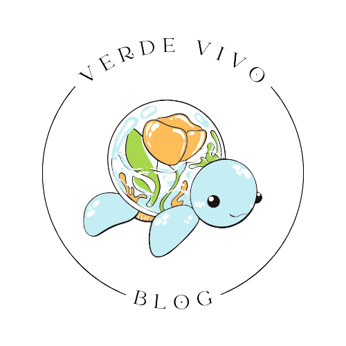

Verde Vivo Blog
Region Insular - Fauna
La fauna de las regiones insulares es notable por su biodiversidad única y adaptaciones especializadas. Incluye especies endémicas, como iguanas marinas y tortugas gigantes en las Galápagos, así como aves exóticas, como loros y albatros. Además, las aguas circundantes albergan una variada vida marina, desde tiburones y mantarrayas hasta coloridos peces tropicales. Estos ecosistemas insulares sirven como refugio para especies en peligro y ofrecen un laboratorio natural para estudiar la evolución y la ecología. La conservación de esta fauna única es esencial para preservar la integridad de las regiones insulares.